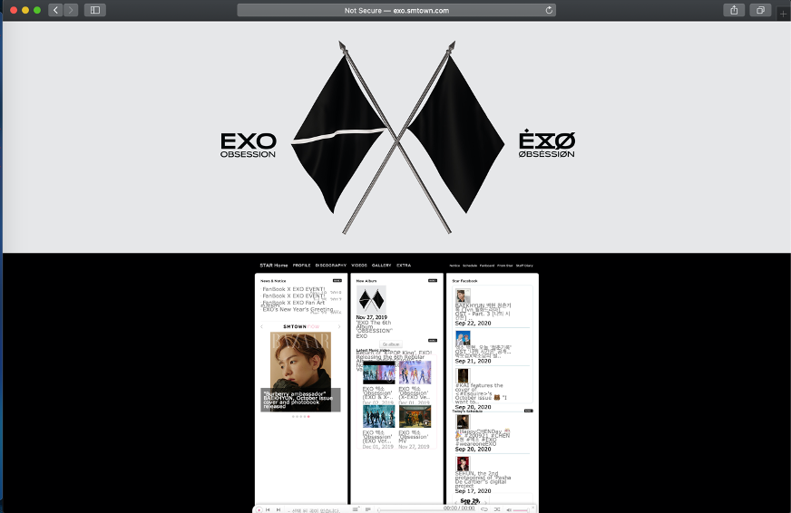
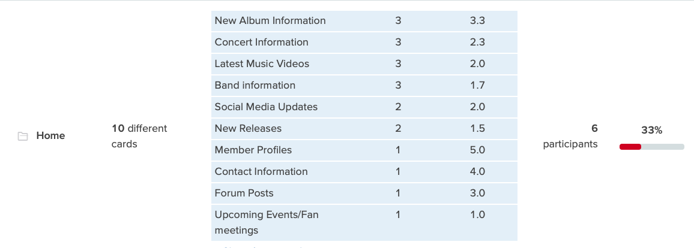
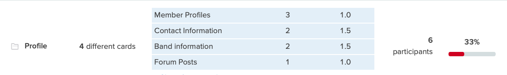
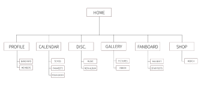
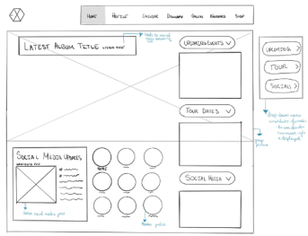
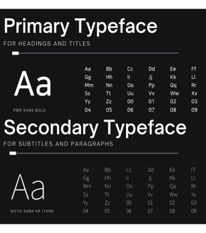

EXO
Redesign
CLASS // IDM 211
SCOPE: USER INTERFACE DESIGN
TIME: 12 WEEKS
TOOLS: INVISION
JUMP TO MAIN CONTENT ↓
EXO: Worldwide K-pop Stars
EXO is a 9-member K-pop group based in South Korea. EXO debuted in 2012 and releases new music every year, with an update to their website as well.
As a fan of EXO, I regularly follow their content on social media and website. What I noticed is that what makes EXO’s website appealing is the effort that goes into changing the website when a comeback (new music!) is around the corner. The suspense and excitement of waiting for these teasers is what drew most fans to the site. The site itself, however, looks quite lackluster after that period has passed:
strengths/
weaknesses
strengths:
The site provides an immersive experience that allows the user to connect to the group during a new comeback due to the teasers, trailers, and graphics added. The teasers include a “mystery” to be solved that will hint the theme of the music video, occasionally. The engagement during this period is high. It also crosses the language barrier: despite being a Korean band, the site still manages to attract the English-speaking audience as well.
weaknesses:
The main weakness of this site was the poorly designed navigation. The menu bar is placed below an image; the first thing you see is the image, and nothing else. This can confuse a user and deter them from using the site. The text is also small and hard to read, and the space is poorly utilized.
the research
To gain an insight into what method would be the best for mapping out the site, I decided to do some user research. In this project, I focused on redesigning the Home page and the Profile page. Many of the users interviewed were looking to see information about new and upcoming albums and concert information. On the Profile page, most of the users were looking for member profiles, contact information, and band information.
 sitemap
The final site map that I decided on was one where the home page would have an extremely condensed version of what is on the profile, calendar, and discography pages. This was so that the home page would have all of the content the user expects to see on the homepage, without the clutter that it orginally had.
challenges
#1 — condensing content
Most of the content was heavily concentrated on the homepage, often overlapping one another. One of my main challenges was to find a place for everything that was on the homepage.
solution:
By distributing content equally across the home page and profile page, the pages started to look less cluttered.
#2 — visual engagement
Since my goal was to emulate the same type of feels I had when I checked the EXO website during a comeback season, I had to find a way to keep the pages as visually engaging as possible.
solution:
I decided to make the current teaser image the site’s background instead of a single color like before.
wireframes
homepage ❃ key features
- ❃ minimalistic
- ❃ dropdown menu that allows the user to control the amount of information displayed
- ❃ focuses more on the aesthetic of the newly released music + information
profile ❃ key features
- ❃ provides an exposition of the whole band
- ❃ uses current images of each member
- ❃ has clickable images that provide a few short facts on each member
typography & color
The secondary typeface chosen was Noto Sans KR. Most of EXO's content is in Korean, making Noto Sans KR a good choice since it is easily transferrable into Korean.
The color choice was made with consideration to EXO’s official color, cosmic latte (#fff837), and the current theme the group is going for. As of now, the group is marketing a split/dual personality trope, where they have their normal selves, called ‘EXO’, and their abnormal selves, ‘X-EXO’.
The reason I chose Outer Space Crayola (#1b3437) is because it directly contrasts with the red colors on the background image I used on the homepage, just as EXO and X-EXO contrast.
conclusion
From the wireframe to the prototype there were a few changes made based on usability. My main goal was to find a solution to the two challenges I had, and the final prototype was an adequate representation of it. Unfortunately, the site is no longer live. The site's content has migrated to its parent site, www.smtown.com